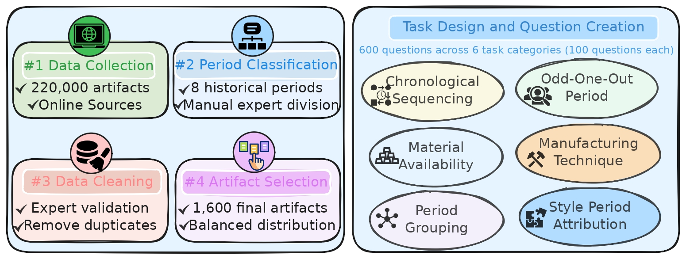

1,600
Indian Artifacts
600
Evaluation Questions
50.4%
Best Model Accuracy: GPT-4o
8
SOTA VLMs Tested
Abstract
Vision-language models (VLMs) often exhibit "cultural anachronism" when interpreting historical artifacts. We introduce AnachroVision, a benchmark designed to evaluate temporal reasoning capabilities on 1,600 Indian cultural artifacts spanning prehistoric to modern periods. Our evaluation reveals significant deficiencies in current models, particularly for non-Western visual culture.
The AnachroVision Pipeline

Figure 1: Systematic reduction and curation from 220,000 raw artifacts to 1,600 high-quality samples across 8 historical periods.
Temporal Reasoning Tasks

Figure 2: Examples of the six task types in our benchmark.
Quantitative Results

Table 1: Zero-shot performance comparison across eight state-of-the-art Vision-Language Models.
Citation
@article{ranjan2026cultural,
title={On the Cultural Anachronism and Temporal Reasoning in Vision Language Models},
author={Ranjan, Mukul and Jha, Prince and Kumari, Khushboo and Shen, Zhiqiang},
journal={ACL 2026},
year={2026}
}
title={On the Cultural Anachronism and Temporal Reasoning in Vision Language Models},
author={Ranjan, Mukul and Jha, Prince and Kumari, Khushboo and Shen, Zhiqiang},
journal={ACL 2026},
year={2026}
}